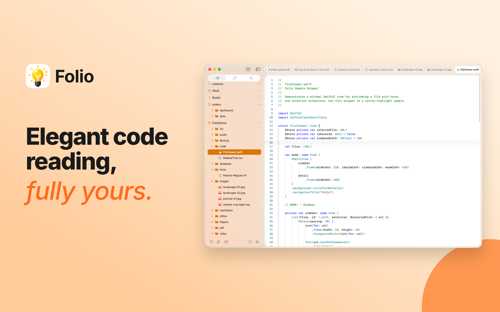
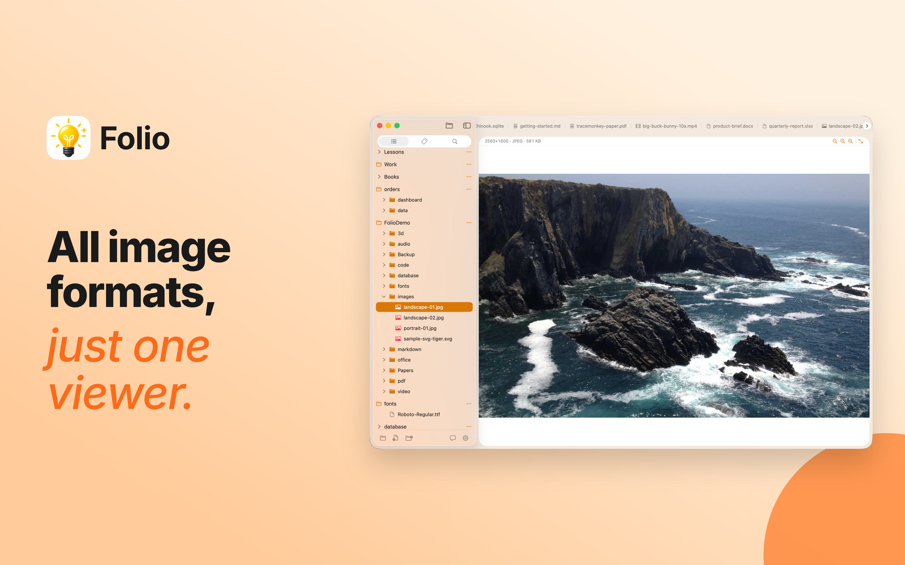
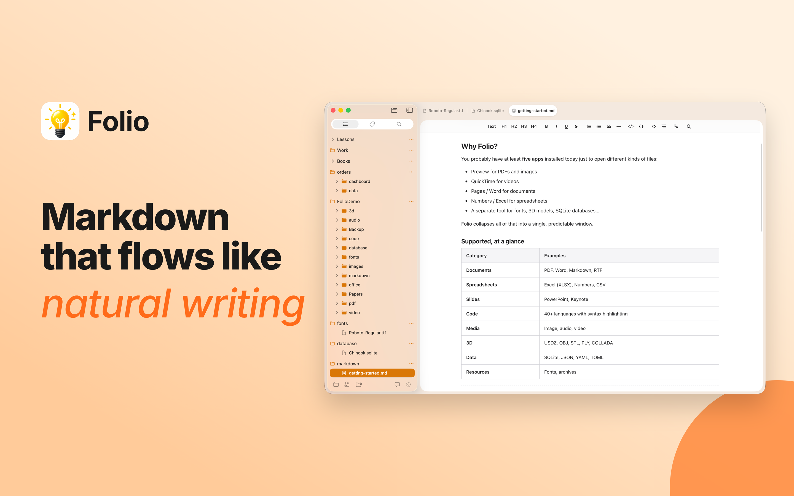
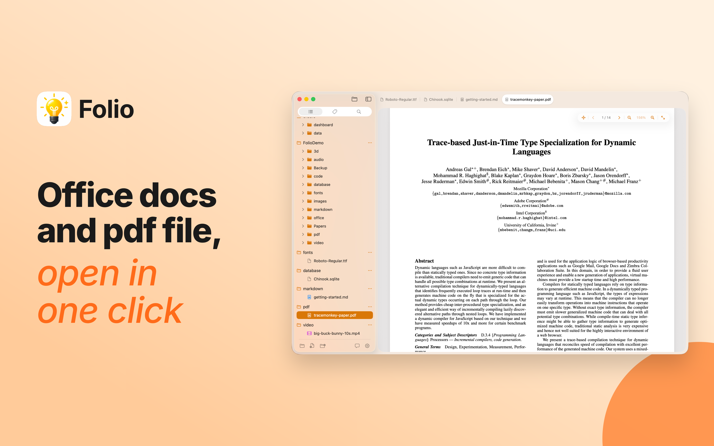
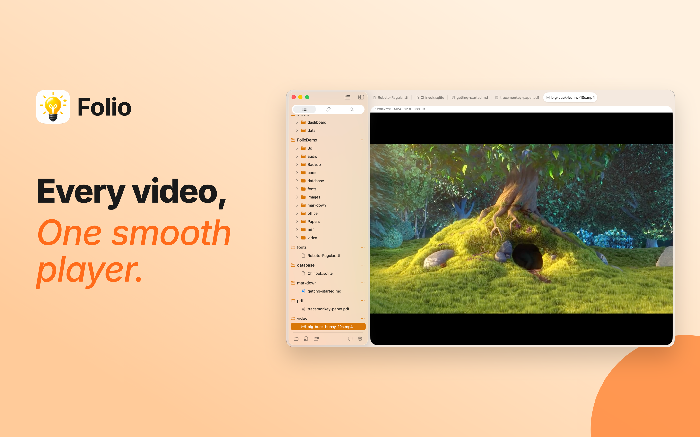
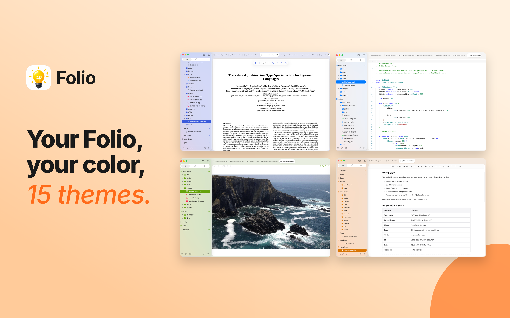

Multi-Workspace
每个项目一个标签页。一键切换，回到上次离开的地方——文件夹、滚动位置、上次打开的文件，都还在那里。
All Formats, One App
一个 app 顶替十几个。文档、表格、演示稿、PDF、笔记、图片、音乐、视频——直接打开就能看。
Full-Text Search
搜的不只是文件名。笔记里的一句话、表格里的一个数字都能直接命中——跨所有打开的工作空间。
Markdown Editor
像阅读发表后的文章一样写作。无需分屏预览，所写即所见。
优雅的代码阅读fully yours.
主流编程语言一应俱全。语法着色清爽、缩进对齐整齐——让代码读起来像读散文一样舒服。
- 主流编程语言全覆盖
- 舒服的字号、行距与配色，长时间阅读不累
- 文件夹并排浏览，需要时随时切换


所有图片格式just one viewer.
再大的图也是秒开。手机照片、相机原图、网络图片、动图、矢量图——一键打开，可缩放、查看拍摄信息、在文件夹里前后翻页。
- 从手机随手拍到相机原片，常见格式都能看
- 超大图秒开，无需等待
- 方向键翻页，空格键快速预览
Markdown 像natural writing.
边写边见。标题、列表、表格、代码块立刻自动美化，没有分屏预览的割裂。内置离线翻译，写作的同时切换语言。
- 所写即所见，整洁清爽
- 数学公式、流程图、代码块自动美化
- 多语言翻译，离线就能用


Office 与 PDFopen in one click.
不用等 Office 启动。Word、Excel、PowerPoint、Pages、Numbers、Keynote 和 PDF——双击就能看，干干净净。
- 支持 Word、Excel、PowerPoint、Pages、Numbers、Keynote
- PDF 内文搜索、目录跳转、关键词高亮
- 长文档秒开，滚动顺滑
每段视频one smooth player.
主流视频格式直接播放，不用等转码。键盘快捷键、字幕、画中画一应俱全，省电不发烫。
- 省电流畅，不烫手不卡顿
- 字幕文件一拖即用
- 音频文件也能看到声音波形

14 种格式，一个窗口看完

你的 Folioyour color, 15 themes.
细腻的界面质感，搭配 15 套精心调校的主题。从奶油米到午夜黑、从苔藓绿到墨水蓝——每个文件都有最合适的阅读色温。
- 15 套精心调校的主题
- 深浅自动跟随系统
- 字体、行高、阅读宽度都能自己调
不只是看，更是用得顺手。
每一个细节，都为了让你在文件之间穿梭得更安静、更专注。
访达式标签
每个工作空间记得你的滚动位置和上次打开的文件。
秒找任何东西
按内容搜索，不止文件名。笔记里的一句话也能瞬间命中。
多文件夹并列
几个项目同时挂着，左边一棵清晰的文件树。
细腻玻璃质感
与系统美学一脉相承的优雅界面。
3D 模型与字体预览
三维模型可以转着看，字体可以一目了然地试。
表格与数据
电子表格与数据表直接查看、排序、筛选。
代码语法着色
几乎你能想到的编程语言都已经准备好。
Markdown 翻译
一键把笔记切换成另一种语言，离线快速。
无干扰阅读
透明标题栏、阅读宽度可调，让文字成为主角。
仍有疑问？
Folio 是一款 Mac 文件浏览器。一个应用里就能打开文档、表格、演示稿、PDF、笔记、代码、图片、音乐和视频——把你日常要切换的十几个 app 收纳进一个安静、专注的窗口。
系统自带的预览只能「看一眼就关」。Folio 是为长时间停留打造的工作空间：多标签、跨文件搜索、双向编辑笔记、15 套阅读主题——把「打开一下就走」变成「打开就能开始工作」。
可以。笔记和代码完全可编辑。Office 文档与 PDF 目前是高保真预览，下一版本会开放标注与表单填写。
Folio 支持 macOS 15 及以上版本，全系列 Mac 都能流畅运行。
Folio 在你打开文件夹时就悄悄准备好，之后只在文件变化时跟进。一万个文件的大文件夹，输入即可命中——你不会感觉到它在工作。
所有处理都在你的电脑上完成。Folio 不会把你的文件内容上传到任何地方——这是默认行为，没有「关闭云同步」的开关。
Folio 当前是 Beta 版，完全免费下载使用。正式版定价将在公开发布前公布；Beta 用户会获得忠诚度优惠。